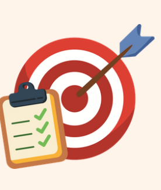

¿Qué evaluaremos?

Criterios de evaluación
Durante el proyecto se evaluarán los siguientes criterios del área de Educación Artística (Música):
CE.2.13
Reconocer y valorar manifestaciones artísticas y musicales del patrimonio cultural andaluz.
CE.2.14
Participar activamente en producciones artísticas individuales y grupales mostrando interés y creatividad.
CE.2.16
Interpretar propuestas musicales sencillas utilizando la voz, el cuerpo o instrumentos.
CE.2.17
Utilizar herramientas digitales de forma responsable para crear producciones artísticas.
Instrumentos
⭐ Rúbrica
Criterios evaluados:
- CE.2.13
- CE.2.14
- CE.2.16
- CE.2.17
Indicador Criterio asociado
Conoce y explica información sobre el artista andaluz CE.2.13
Participa activamente en el trabajo del grupo CE.2.14
Realiza la exposición oral con claridad CE.2.14
Participa en la interpretación musical CE.2.16
Utiliza Canva correctamente CE.2.17
Respeta las normas de seguridad digital CE.2.17
👉 Rúbrica.
{kind=link}
✅ Lista de cotejo
Criterios evaluados:
CE.2.14
CE.2.16
CE.2.1
Ítem Sí No
Participa en el trabajo cooperativo □ □
Respeta a sus compañeros □ □
Utiliza Canva adecuadamente □ □
Respeta las normas de seguridad digital □ □
Participa en la actuación musical □ □
👉 Lista.
{kind=link}
🎯 Diana de autoevaluación
Relacionada con:
CE.2.14
CE.2.16
CE.2.17
El alumnado valorará:
- Mi participación en el grupo.
- Mi esfuerzo durante el proyecto.
- Mi actuación musical.
- Mi uso de Canva.
- Mi respeto a las normas digitales.
- Mi satisfacción con el trabajo realizado.
👉 Diana.
{kind=link}
Los instrumentos de evaluación se han diseñado vinculándolos directamente a los criterios de evaluación del área de Educación Artística (Música) para garantizar una evaluación continua, competencial y coherente con los aprendizajes desarrollados durante el proyecto.